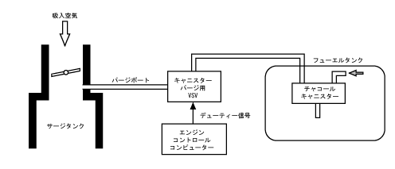

| Canister Purge Control |
| ● |
Canister purge control, which draws fuel vapor generated in the fuel tank into the intake port for combustion, has been adopted. The canister purge volume is flow-controlled by the engine control computer, which controls the opening and closing of the canister purge VSV according to the driving conditions.
|
 |
 Related Parts Related Parts
|